От ручного планирования к системе управления процессами
Как внедрение диаграммы Ганта и аналитики сократило время планирования и повысило прозрачность работ
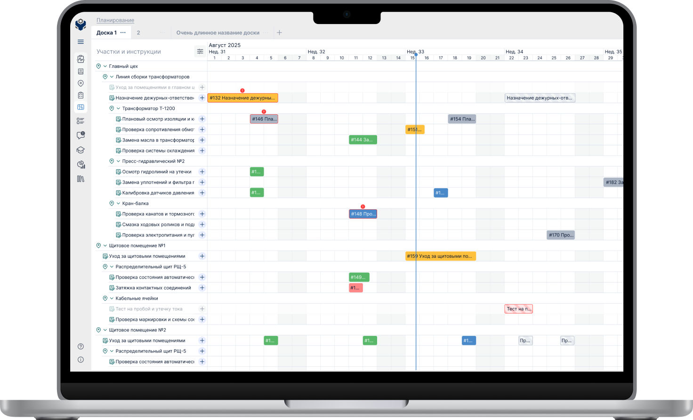
ServiceVizor — цифровой помощник на производстве.
Продукт состоит из двух взаимосвязанных частей:
- Веб-сервиса для технических специалистов, где создаются рабочие инструкции, планируются и назначаются задания, контролируется ход работ;
- Мобильного приложения для операторов на производстве, в котором сотрудники выполняют задания, отвечают на контрольные вопросы по инструкциям и фиксируют замечания прямо в процессе работы.
Такой подход позволяет связать офисное планирование и реальное выполнение задач на производстве в единую систему. ServiceVizor должен снижать количество ошибок и упрощать коммуникацию между офисом и цехом.
коротко
Разработали систему планирования и аналитики для производственного сервиса: Gantt-представление задач, регулярные сценарии и пользовательские дашборды. Это позволило менеджерам быстрее планировать обходы, контролировать загрузку команд и анализировать эффективность выполнения работ.
контекст и проблематика
Заказчики — отделы, которые занимаются техническим обслуживанием и ремонтом оборудования на заводах и предприятиях. У них есть плановые обходы: регулярные осмотры, проверки, ремонтные работы.
До проекта менеджеры видели задания только списком — это не позволяло оценивать загруженность по времени и вызывало пересечения по задачам. Кроме того, в системе не было функции регулярных заданий — повторяющиеся обходы приходилось создавать вручную.
исследования
— Анализ решения в Jira, Weeek, Excel — какие UX-паттерны применяются для диаграмм.
— Интервью с двумя менеджерами обходов, чтобы понять как сейчас они решают свои рутинные задачи.
— Интервью с менеджером нашей команды, который регулярно пользуется Gantt-диаграмой, чтобы узнать, что для него самое важное.
Инсайты из интервью и анализа других диаграмм
— Просмотр загруженности будущих недель и месяцев помогает менеджерам заранее распределять ресурсы и избегать пересечений в графике.
— Регулярные задания — основной тип работ, их значительно больше, чем разовых. Поэтому гибкая настройка повторений особенно критична.
— Сейчас производственные команды закрывают эту потребность с помощью Excel и вручную нарисованных диаграмм, что занимает много времени и приводит к ошибкам.
— Создавать новое задание или менять сроки через клик по таймлайну — не лучшая практика для крупных предприятий, где важна осознанность действий и минимизация мискликов.
— Пользователю недостаточно просто видеть сроки выполнения задач. Возникает потребность понять, как на самом деле работает процесс: где возникают задержки, как распределяется нагрузка и насколько план соответствует факту.
Функции в MVP
- Визуальное планирование задач через диаграмму Ганта, чтобы быстро видеть загрузку и пересечения.
- Поддержка регулярных заданий, как основного формата плановых обходов.
- Удобная корректировка сроков через drag&drop без лишних действий.
Функции в пост-MVP
проработка фичей
Регулярные задания
Могут ли регулярные задания становиться обычными и наоборот? В производственной практике это два разных класса работ регулярные обходы и ситуативные ремонты из-за неисправностей. Поэтому мы решили сделать их двумя отдельными типами. Это ускорило разработку и сделало интерфейс более прозрачным.
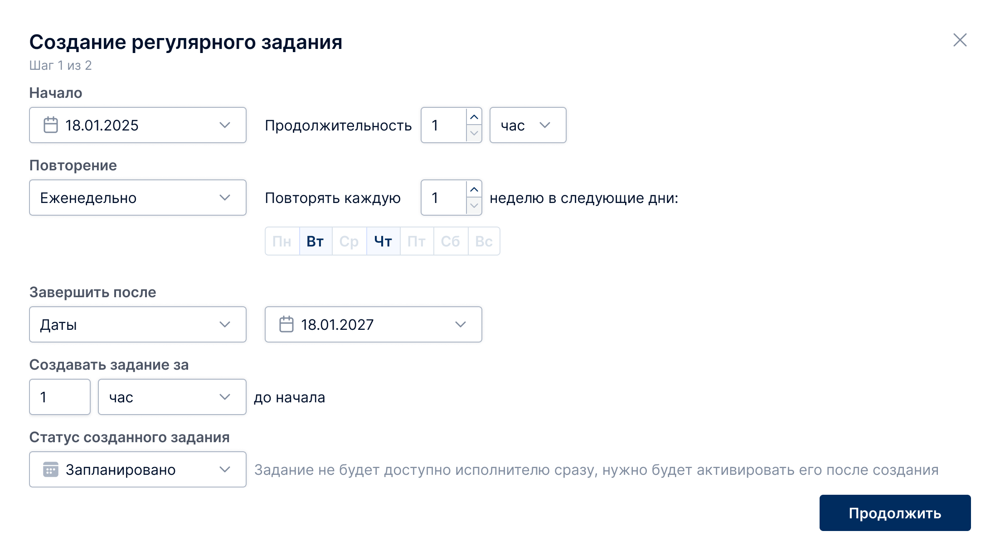
Навигация и управление масштабом
- изменение масштаба (неделя/месяц)
- быстрый переход к сегодняшнему дню
- горизонтальный скролл
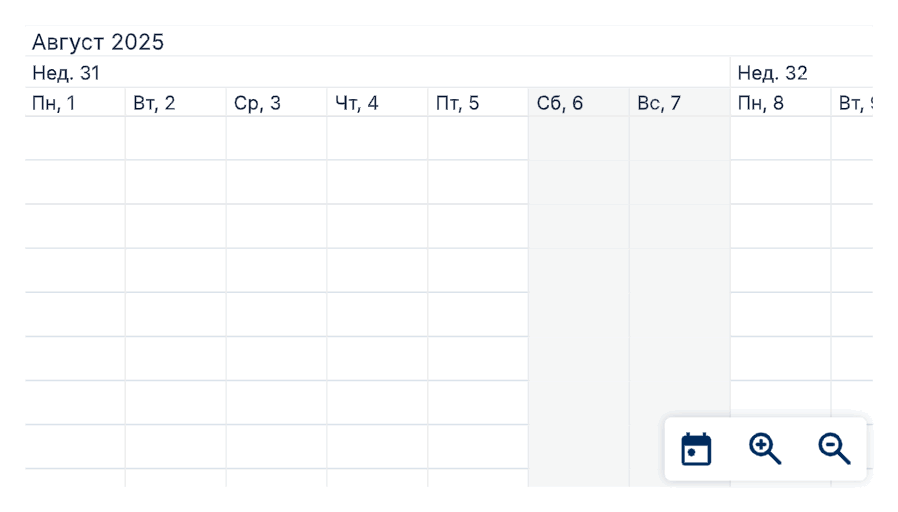
Drag&Drop как ключевой сценарий
Одним из центральных UX-паттернов стало редактирование сроков прямо на диаграмме с помощью drag&drop — это самый быстрый способ корректировать длительность и смещения задач.
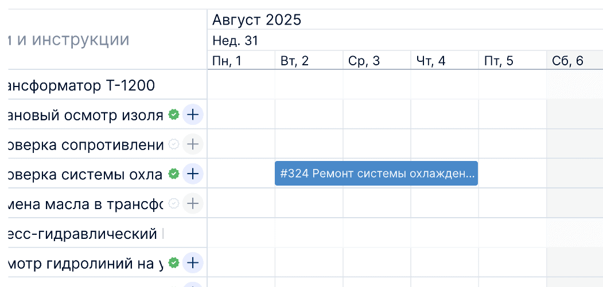
Дизайн-система
Вся типографика, цвета, кнопки и другие атомарные элементы были взяты из существующей дизайн-системы. Плашки задач, тултипы, маркеры повторов и другие «молекулы» мы собирали из атомов, чтобы сохранить единый визуальный язык и упростить поддержку.
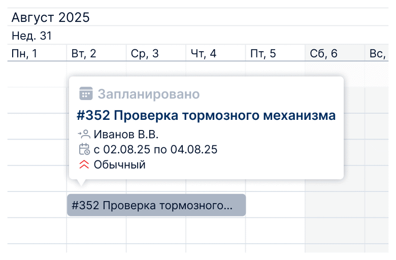
Идеи, от которых отказались
Мы рассматривали идею показывать на строках участков плашку-счётчик, отражающую суммарную длительность всех вложенных задач. Она могла бы помочь оценивать объём работ без раскрытия строки, но при большой вложенности такая логика сильно нагружала бы систему и ценность остаётся гипотезой. Поэтому оставили эту идею «на потом».
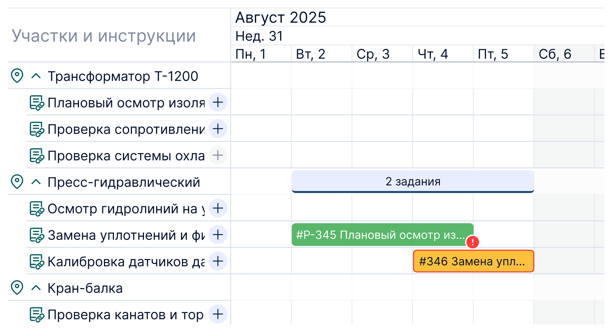
решения в MVP
Диаграма Ганта — визуализация планирования
— Цвет — статус (запланировано, активно, в работе, завершено, прервано). Если задание просрочено, то у него появляется восклицательный знак и красная обводка.
— При наведении открывается тултип с деталями, по клику открывается карточка задания.
— Можно изменять даты задач прямо на диаграмме.
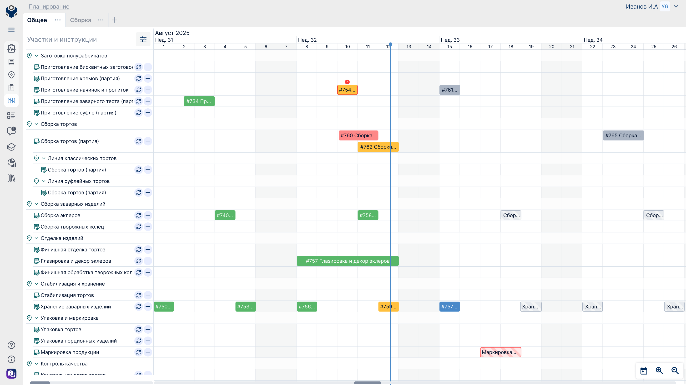
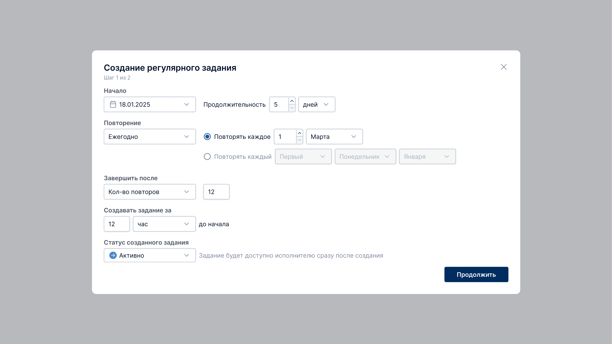
решения в пост-MVP
Виджеты:
— Статистика по срокам начала и завершения заданий
— Средняя длительность шагов и отклонения от планового времени
— Динамика контрольного параметра
— Количество переводов заданий в выбранный статус по исполнителям
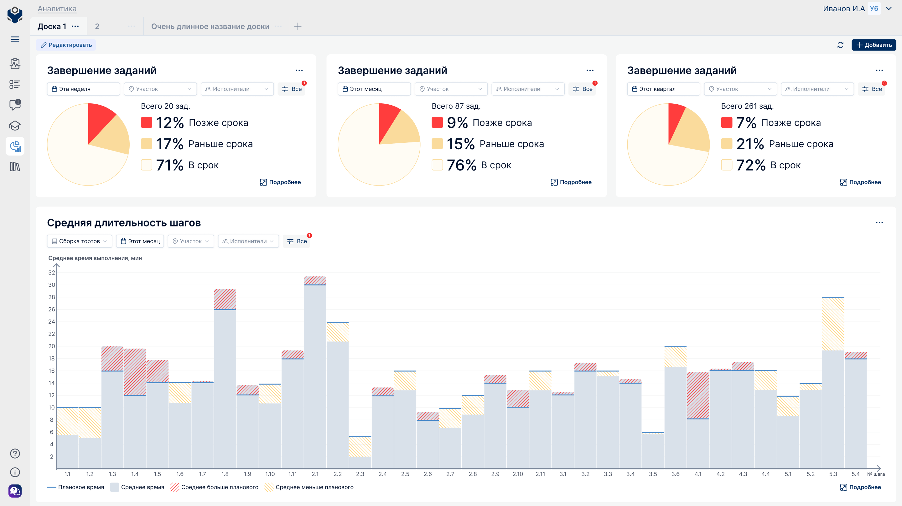
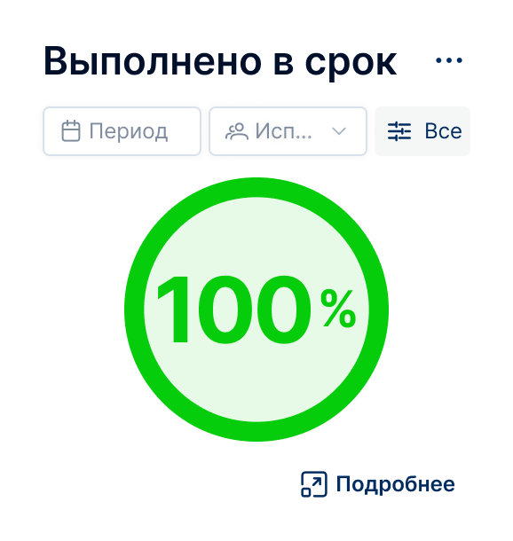
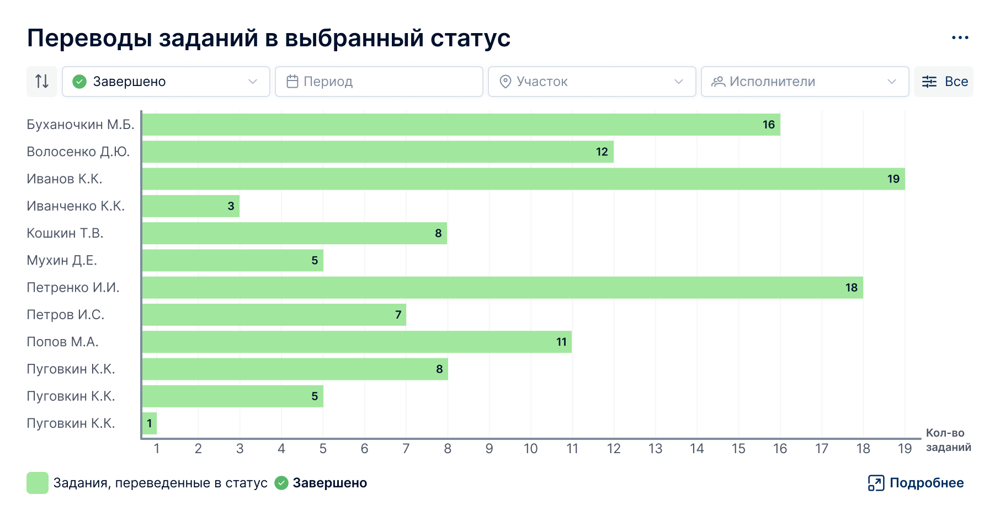
результаты
Проект улучшил восприятие задач во времени, позволил менеджерам планировать обходы быстрее и избавил от рутины с повторными заданиями. Для продукта это стало шагом к масштабируемой системе планирования и приблизило к подписанию новых контрактов.